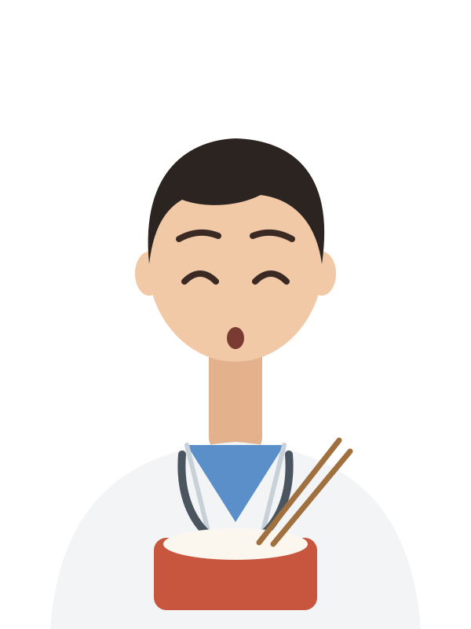
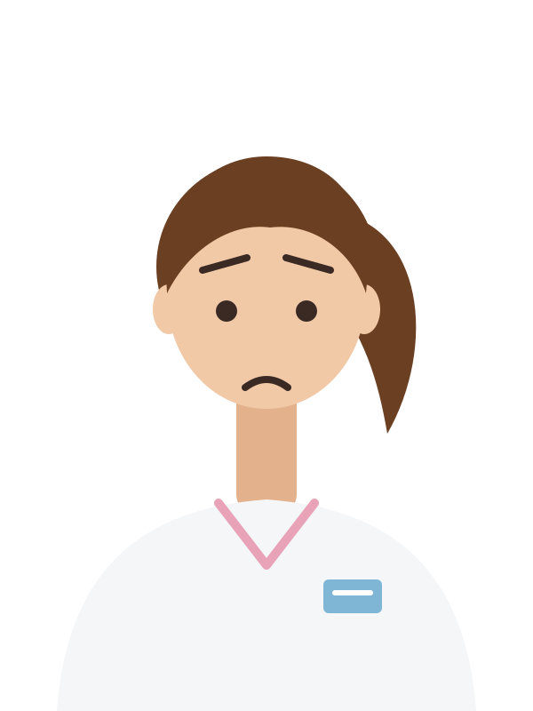
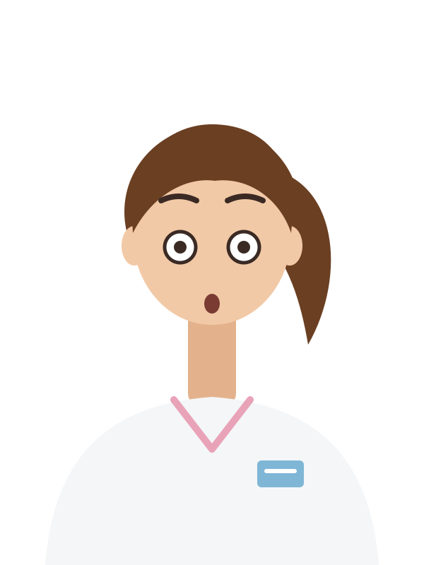

正在蓋病房…

精力慢慢回來，時間也過得特別快。按 E 起床。
病房 · 值班17:00距離交班 15 小時 0 分
精力45%
肚子沒吃晚餐
尿意62%

邊吃邊回血。按 E 先不吃了。

照著紅色圓圈的節拍，按 C 或下面的按鈕壓胸。
每分鐘 100–120 下，每下壓深 5–6 公分、再讓胸口完全回彈。
先連續壓 30 下，中間不要停；接著護理師和急救小組會輪流接手，一直壓到 AED 分析或心跳回來。
0 / 30
護理師
LAB REPORT · 檢驗報告
床
| 項目 | 結果 | 單位 | 參考值 |
|---|


電話響了

電話響了你才吃到一半
扒兩口可以多回一點精力，但護理師會等比較久。
電話響了

07:30 · 交班
0今晚被電話吵醒（次）
值班醫師的心聲
我熱愛值班 · 一般民眾體驗版
夜班，17:00 接班
你是今晚的值班醫師，一個人顧整層病房，從下午五點值到隔天早上八點。電話會響：有的只是小事，有的是真的危險。吃飯、睡覺、上廁所，都得自己找空檔。
- ↑↓←→
- 走路（按住 Shift 用跑的）
- E
- 看病人、吃便當、上床睡覺、上廁所
- 123
- 在床邊選你要做的事（也可以直接點）
- C
- 病人心跳停了：照節拍按 C（或下面的按鈕）壓胸
- M
- 全景：看整層樓，再按一次回來
- P
- 暫停
選你今晚的樣子：
內容包含病人病危和死亡的情節。遊戲僅供衛教，不能取代就醫；遇到緊急狀況請打 119。
交班
今晚，病房交給你了
值班時間 17:00 – 隔天 08:00。先看完白班交班，準備好再開始。
17:00按下開始，時間才會開始走

你
精力82%
肚子還沒吃晚餐
尿意20%
白班交班單
白班 R1 → 你17:00 · 今晚要注意的：
今晚的護理師
怎麼玩
↑↓←→走路（Shift 跑）
E看病人、吃、睡、廁所
1 2 3床邊選擇
C照節拍壓胸
M全景（看整層樓）
P暫停
值班守則
- 記得照顧好自己：記得吃飯、睡覺、上廁所。精力低於 20% 就跑不動，歸零會累倒，今晚就結束了。
- 電話會響：有的是小事，有的是真的危險。去看、電話交代，還是先不管，你決定。
- 答應了要去就快點到。讓病人等太久會變差，護理師也會再打來。
- 治療的方法可以在床邊做選擇。選錯病人會變差，錯太多可能救不回來。
暫停中
時間停住了：病人不會變差，電話也不會響。
按 P 或 Enter 也可以繼續